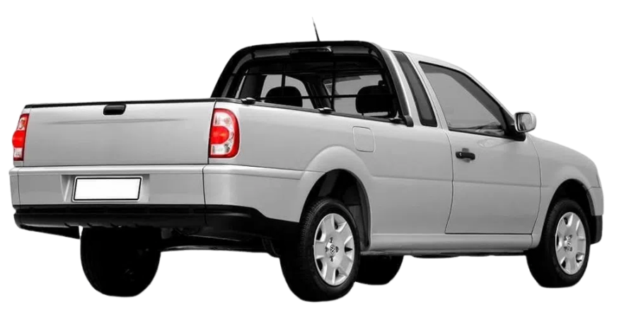

JLJ SOLDAS E MANUTENÇÕES
ASSISTÊNCIA TÉCNICA ESPECIALIZADA ATÉ VOCÊ!

SOLDAS EM GERAL
Melhorias contínuas tornaram o processo MIG aplicável à soldagem
de todos os metais comercialmente
importantes como os aços, o alumínio, aços inoxidáveis, cobre e vários outros. Materiais com
espessura acima de 0,76 mm podem ser soldados praticamente em todas as posições.
TROCA DE BUCHAMENTO
As buchas e pinos são peças de extremo desgaste em escavadeiras, tratores, moto niveladoras, pás
carregadeiras e equipamentos em geral. Seu desgaste é inevitável em qualquer equipamento e a troca
periódica é fundamental para uma boa manutenção preventiva.
SOLDA DE ADAPTADOR (DENTES E UNHAS)
Proteger os dentes da concha é essencial para aumentar sua vida útil. Essa parte da ferramenta tem
algumas funções: nivelamento, demolição, escavação, transporte, entre outras. A soldagem pesada pode
fazer diferença para a produtividade dos processos de desempenho do maquinário.
REFORMA DE CAÇAMBAS
Reforma e Manutenção de Caçambas. Realizamos manutenções preventivas e corretivas, conserto, solda
de
chapas.
REFORMA DE CONCHAS EM GERAL
A reforma de conchas é um serviço fundamental de manutenção, possibilitando ao cliente que mantenha
o
desempenho de seus maquinários sem comprometer a produção; garantindo também a durabilidade aos
componentes e evitando que cheguem na etapa irreparável de desgaste.